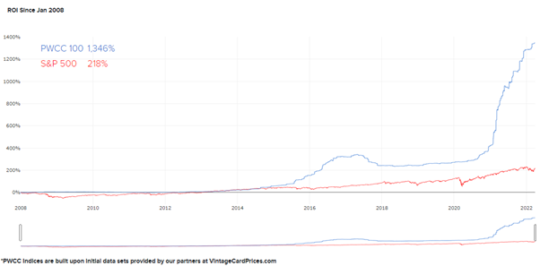

Rise of a new trend (Live selling & Trading Cards and Collectibles)
By the time Covid-19 reared its ugliest head around the middle of 2021, world governments had already brought every conceivable measure to bear for all intents and purposes. While these policies made many people weary and a feeling of hopelessness grew amongst us all, the value and meaning of everything we hold dear felt threatened like never before: our livelihood, perspective, and the sense of familiarity.
“Necessity breeds innovation”
If you’re in the e-commerce world, then you know that staying ahead of the curve is essential to your growth. While most of us are sentenced to stay at home and follow quarantine protocol, many took their business to online platforms to make a living. During the last few years of the pandemic, the e-commerce industry bloomed at an exponential rate as people sought to minimize physical contact by buying products online. One of the different ways to buy and sell products online is live selling, which became popular due to the nature of the excitement of instant gratification, accessibility of social networks, and entertainment.
Why did businesses start to sell live?
We’re talking about a whole new shopping experience that engages and entertains while selling. Live selling allows retailers to directly engage with multiple customers to showcase their products, make sales, and gain a new audience. It is a perfect opportunity for these sellers to explain and promote the products in-depth without facing the constraints of a video’s time limit or character limits from websites. In addition, it enables businesses to acquire potential customers as their personalities shine in real-time. The emergence of live selling means that consumers no longer need to navigate product descriptions or scour the internet for reviews. Instead, they can get immediate feedback, ask questions and remove traditional barriers to capturing an online sale, such as trust in the brand or product quality. Apart from these reasons, small businesses also finally feel like they stand a chance against the big boys. Due to limited staffing for S.M.E.s, doing live selling is a much simpler way for them - they do not have to take pictures of every item from every angle and upload them with the correct description. They simply have to stand in front of their device, pick up the items, and sell them. You do not need a massive setup of fancy devices, just a mobile phone and a stable internet connection.
Rise of a new trend
Live selling or Social commerce is just part of a rising trend. Sports memorabilia, Pokemon cards, and other collectibles also saw a rise in attention during this period, constantly making waves after waves. Since the start of 2020, more than 10 cards have changed hands for more than USD$1.2mm. Just 4 weeks ago, Logan Paul acquired a coveted P.S.A. Grade 10 Pikachu Illustration card following a record-breaking trade worth USD $5,275,000. If that is not enough for you, in Aug 2021, a T206 Honus Wagner baseball card became the most expensive trading card ever when it sold for USD $6,606,000, and eBay reports USD$2 bn in trading cards transactions in the first half of 2021, which equals the total revenue (G.M.V.) generated in the full year of 2020.
So you may be asking, ‘why are these plastics/papers worth so much?’. Is it simply due to lockdown, and people feel nostalgia out of boredom? An Interesting factor points to its value to many investors. Many investors flock to trading cards and collectibles as a safe bet, especially given the massive growth seen over the past two decades. Trading cards are real-world assets, while they’re less volatile than the likes of crypto. Not surprisingly, they have also greatly outperformed S&P500 by >6x!
 And funny enough, the price actions of these items are purely based on supply and demand. So you can drop all your R.S.I., Bollinger bands, MACD etc., all together.Introducing Trumpcards

To serve this growing industry, Trumpcards is set to launch by Q4 of 2022. Trumpcards is positioned as Social commerce that allows communities all across S.E.A to come together with a common interest. By using our State-of-the-art technology, collectors are able to host live shows, auction their items or make a direct listing on the platform.
Understanding the pains of collectors, Trumpcards has a proprietary multipoint image inspection system that can help shive through Trading Cards determining their authenticity and rejecting all that fail the high watermark. Users who want an additional safety net can request Trumpcards to be their middleman in the transaction – items to be sent to Trumpcards, verified, and then forwarded to the buyer.
Leveraging on Big data and A.I. capabilities, we have come up with the first of its kind portfolio that allows all collectibles to be tracked on 1 single platform. Our goal is to enable everyone to turn their passion into a business and bring people together through e-commerce. We will do all the heavy lifting for you, and you can focus on what you do the best (selling).
From now till the end of July, interested users can whitelist their username below! For interested live-streamers, please use the other form below, and we will process it ASAP! Note that priority will be given to those streaming from Indonesia, Phillippines, and Singapore.
Whitelist your username @ https://www.trumpcards.app/onboarding
Live Streamer Application @ https://www.trumpcards.app/apply-livestream
For any enquires, feel free to reach out to me at edwin@trumpcards.app
Official Socials: Linktree
Disclaimer: Any views or opinions represented in this article are personal and do not represent those of people, institutions or organizations that the owner may not be associated with in a professional or personal capacity unless explicitly stated.All content provided in this article is for informational purposes only. The owner will not be liable for any errors or omissions in this information nor for the availability of this information.